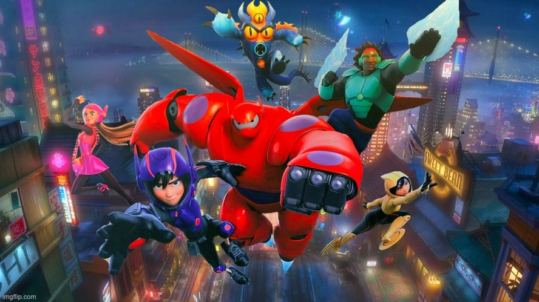

In the futuristic city of San Fransokyo,[b] Hiro Hamada, a 14-year-old high school graduate and robotics prodigy, spends his time competing in illegal underground betting for robot fights. Hoping to get Hiro out of this dangerous lifestyle, his inventive older brother Tadashi takes him to the San Fransokyo Institute of Technology, where Hiro meets Tadashi's best friends; gritty Go Go Tomago, neurotic Wasabi, bubbly Honey Lemon and comic book fan Fred. Tadashi also introduces his project, an inflatable AI healthcare robot named Baymax. After meeting Tadashi's mentor Professor Robert Callaghan, Hiro applies to the university, impressing the school's showcase with his project; microbots that can link together into any configuration using a neural transmitter. Hiro is accepted, but a fire breaks out while Callaghan is still in the building. Tadashi rushes back inside to save him, only for the building to explode, with both declared dead.
Two weeks later, Hiro inadvertently activates Baymax. His only remaining microbot begins to move on its own, so he and Baymax follow it to an abandoned warehouse. Inside, they discover the microbots being mass-produced by a Kabuki mask-wearing supervillain known as "Yokai", who tries to dispose of Hiro and Baymax, but they narrowly escape. Deducing that Yokai was the mastermind behind the fire, Hiro weaponizes Baymax for defense, and Hiro's friends, whom Baymax contacted, meet up with them. Yokai pursues the group through the streets, but Baymax saves them. At Fred's house, Hiro upgrades Baymax and the group weaponizes their own inventions to combat Yokai.
Believing Yokai to be Alistair Krei, a tech mogul who had wanted to buy the microbots at the showcase, the group tracks him to an abandoned Krei Tech laboratory on a remote island. They discover it was used for teleportation research, but the government shut it down after a prototype portal destabilized, trapping a test pilot inside. The group are soon ambushed by Yokai, but they manage to remove his mask and he is revealed to actually be Callaghan, who had faked his death using the stolen microbots.
Hiro, enraged at Callaghan's indifference to Tadashi's death, removes Baymax's healthcare chip and orders him to kill Callaghan despite his friends' objections. Baymax obeys Hiro's commands before the rest of the group saves him by reinstalling his healthcare chip, returning him to his former personality as Callaghan escapes. Feeling betrayed by his friends' actions, Hiro leaves with Baymax, intent on avenging Tadashi. When he attempts to remove Baymax’s healthcare chip again, Baymax recognizes Hiro’s recklessness and shows him archived footage of his development, reminding him that Tadashi's goal was to help people. After Hiro apologizes to Baymax and his friends they discover that the lost test pilot was Callaghan's daughter, Abigail.
Now prepared to take revenge on Krei for his daughter's disappearance, Callaghan reactivates the teleportation portal to demolish his company's headquarters, but the heroes defeat him and save Krei. Baymax detects Abigail still alive inside the portal, and despite Krei's warnings about the portal being too unstable, Hiro and Baymax enter it and find Abigail trapped in stasis. Baymax is struck by debris, damaging him and forcing Hiro to leave him behind. Baymax uses his rocket fist to propel Hiro and Abigail out of the portal before it is destroyed. In the aftermath, Callaghan is taken into custody for his crimes while the awakened Abigail is taken to hospital. Some time later, after beginning his tenure at the institute with his friends, Hiro discovers Baymax's healthcare chip clenched in the rocket fist. He rebuilds Baymax and they and their friends celebrate Callaghan's arrest and Hiro's first day at the institute before continuing to protect the city as a team of high-tech superheroes called Big Hero 6 on behalf of Tadashi.